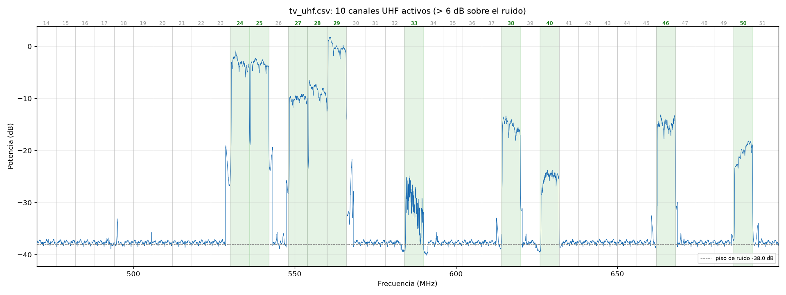

4. TV digital (ISDB-Tb): mapear los canales UHF
Qué se puede y qué no
| ¿Se puede con el V4L? | |
|---|---|
| Ver los canales en el espectro y medir su intensidad | Sí |
| Saber qué canales físicos están activos en tu zona | Sí (este procedimiento) |
| Ver la imagen | No |
Por qué no se puede ver la imagen: - El ancho de banda. Chile usa ISDB-Tb, con canales de 6 MHz y una señal de 5.57 MHz. El V4L ve como máximo unos 2.4 MHz a la vez. - El chip. El modo TV de fábrica del RTL2832U es DVB-T, el estándar europeo, que es incompatible con ISDB-Tb. Además ese modo se reemplazó por WinUSB al instalar el SDR. - La alternativa práctica: para ver TV en el PC se usa un sintonizador USB ISDB-T.
Cómo se ve un canal digital en SDR#: una meseta plana de bordes muy rectos, con pequeños picos encima (las portadoras piloto TMCC/AC).
La fórmula de los canales
El canal UHF n (14 a 51) ocupa:
inicio = 470 + 6·(n − 14) MHz fin = inicio + 6 MHz
centro de la señal = inicio + 3 + 1/7 MHz (ISDB-Tb va corrida +143 kHz)
Ejemplo, el canal 24: ocupa de 530 a 536 MHz y la señal está centrada en 533.143 MHz. El segmento 1seg (la versión para celulares, de unos 430 kHz) está justo en ese centro.
Paso 1: cerrar SDR# y SDR++
Paso 2: barrido de 470 a 700 MHz (2 minutos)
Desde la carpeta del proyecto:
drivers/rtlsdrblog-V1.4.0/x64/rtl_power.exe -f 470M:700M:50k -g 12.5 -c 25% -i 10 -e 2m scans/tv_uhf.csv
| Opción | Por qué |
|---|---|
-f 470M:700M:50k |
Toda la banda UHF de TV (canales 14–51), con resolución de 50 kHz |
-g 12.5 |
Ganancia moderada. Los canales de los cerros de Santiago llegan fuertes. Si ves el piso de ruido con escalones, baja a -g 8.7 |
-c 25% |
Descarta los bordes de cada salto |
-e 2m |
Unos 12 barridos completos, suficientes para promediar |
Paso 3: detectar los canales
python tools/canales_tv.py scans/tv_uhf.csv 6
- Qué hace: revisa los canales 14 a 51 y marca como activo cada canal cuya potencia central supera el piso de ruido en más de 6 dB (el último argumento).
- Qué genera: el gráfico
scans/tv_uhf_canales.png(canales activos en verde) y una tabla. - Columna "Forma": dice si el canal tiene la meseta plana con bordes abruptos típica de ISDB-Tb, o si es irregular.
Resultado del 2026-10-02, 19:10 (Santiago, dipolo en interior, ganancia 12.5 dB)

| Canal | MHz | Sobre el ruido | Forma | Comentario |
|---|---|---|---|---|
| 29 | 560–566 | +37.7 dB | meseta | El más fuerte |
| 24 | 530–536 | +34.8 dB | meseta | El que viste en SDR# (borde en 530.36 MHz) |
| 25 | 536–542 | +34.8 dB | meseta | Pegado al 24 |
| 28 | 554–560 | +29.8 dB | meseta | |
| 27 | 548–554 | +28.1 dB | meseta | |
| 38 | 614–620 | +23.0 dB | meseta | |
| 46 | 662–668 | +22.9 dB | meseta | |
| 50 | 686–692 | +18.0 dB | meseta inclinada | La inclinación suele deberse a multitrayecto: rebotes en edificios y cerros |
| 40 | 626–632 | +13.3 dB | meseta | |
| 33 | 584–590 | +7.9 dB | irregular | Débil y cambiante. Puede ser un canal lejano con desvanecimiento o una señal de otro tipo |
Cómo leer el gráfico:
- Los picos finos que aparecen justo al lado de los canales fuertes (por ejemplo en
528, 547 y 567 MHz) no son canales. Son artefactos del barrido: imágenes y bordes
de los saltos de rtl_power cuando hay una señal muy fuerte cerca.
- El número del canal físico (24, 29...) no es el número virtual que muestra el
televisor (por ejemplo 7.1 o 13.1). Para saber qué emisora es, mira el menú de
información de la señal del televisor, que suele mostrar el canal físico UHF.
Paso 4 (opcional): mirar un canal en SDR
- Sintoniza el centro de la señal: inicio + 3.143 MHz. Por ejemplo, 563.143 MHz para el canal 29.
- Pon Sample Rate en 2.4 MSPS y RF Gain en 0–10 dB. Los canales fuertes saturan fácil.
- Verás la parte central de la meseta. Para ver un borde, corre la frecuencia unos ±2.5 MHz.
Repetirlo para comparar
- Otra ubicación de la antena: guarda cada barrido con un nombre distinto, por
ejemplo
scans/tv_ventana.csvoscans/tv_exterior.csv. Así comparas cuántos dB ganas. - Canales VHF (7–13, 174–216 MHz): cambia el rango a
-f 174M:216M:50k. La tabla automática solo cubre UHF, pero el gráfico degraficar_power.pysirve igual.